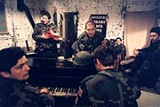

Az alábbi megemlékezést egy közeli barátja juttatta el hozzám és kérésére
teszem közzé - BiG.
"A bolíviai rendőrök csütörtökön lelőtték a délszláv
háború egyik legendás figuráját. A magyar apától származó Chilében és Svédországban is megforduló,
horvát és magyar állampolgárságú Rózsa-Flores Eduardo 1991-től a horvátok oldalán harcolt.
Itt megvédett egy magyarlakta falut, utána áttért az iszlámra, verseket és háborús mementókat
írt, és kiállt az iszlám országok védelmében. –
híradás."
Néhány éve egy közös ismerősünk, aki még a László gimiből
ismerte, szólt, hogy keressük már meg, mert Edu eltűnt. No nem ment világgá, csak elege lett
a nagyvárosi életből, s egy tündéri nógrádi faluba tette át a székhelyét. Nem volt nehéz
megtalálni a házat, mivel a kapun jókora betűkkel ott virított: MONDJON LE! A kapu
előtt egy terepjáró, melyet a horvát állam ajándékozott
Edunak.
Nos,
itt ismerkedtem meg vele.
Közvetlen,
vidám ember, tele ambícióval, alkotói energiával, nagy tervekkel. A környéken rövid idő alatt
igen népszerűvé vált, mivel új színt vitt a falu és a környék kulturális életébe. Este a
kertben, - aki járt már nála, az megerősíti: Krisztus, Sztálin feje
bronzból és még megannyi érdekesség - előkerült némi jófajta bor. Megjegyzem, a ház alatt
igen jó pince csábított hűsölésre, és elindult a szavak áradata. Hazáról, nemzetről,
radikalizmusról, versekről, a róla szóló filmről (Chico),
nőkről…
Egyszer
csak befutott Linda néhány üveg sörrel, majd a rendőrjárőr, hogy mi mit hangoskodunk. Nem kell
mondanom, hogy mi volt Edunak, egy olyan embernek a reakciója, akinek
minden cselekedetét a vére határozza meg. A lényeg az, hogy a rend éber őrei hamarosan
elsündörögtek...
Egyik év szilveszterének délutánján
felcsörgettem, hogy mit csinál este. Azonnal meghívott asszonyostól-gyerekestől, s életem
legemlékezetesebb szilveszterét töltöttem nála, jónéhány hozzá közel álló emberrel együtt.
Reggelig iszogattunk megváltva a világot, történelemről, személyekről, a jövőről beszélgetve.
Éjfélkor a ház mellett emelkedő fennsíkon hatalmas tüzet raktunk, Himnuszt és Székely himnuszt
énekeltünk, tüzet ugrottunk. A fiamnak a mai napig meghatározó ez az
élmény.
Az öszödi
beszéd után a Kossuth téren felszólalt. A beszédére nagyon készült, elküldte nekem is, hogy
véleményezzem, mert fontos volt számára a barátai véleménye.Rendszeresen beszéltünk telefonon, ápoltuk egymás lelkét, mert ő egy igen érzékeny ember
volt. Hét hónapja újra eltűnt, nem tudtam utolérni, mígnem a nagyon sokadik mailemre
válaszolt most Húsvét vasárnapján:
"…megkaptam üzeneteidet...csak általában itten
nincsen túl sok idom kommunikálni...Szóval 7ik hónapja nem vagyok otthon...akadt megint egy kis
dolgom valahol...reméljük ezt is sikerre visszük... Nem tudom mikor megyek haza, előbb természetesen be kell fejeznem azt
amiért kijöttem. Baráti öleléssel búcsúzom"
Én is Tőled Barátom.
Hálás vagyok a sorsnak, hogy a barátja lehettem. Megdöbbenéssel nézem
a bolíviai TV híradójának felvételeit, azokról a holttestekről, akik alsónadrágban,
fegyvertelenül lettek kegyetlenül lemészárolva. Milyen világot élünk?A híradások tűzharcról beszélnek, de ez nem volt más, mint kivégzés. Mindig is éreztem,
hogy nem végelgyengülésben fog elmenni közülünk. A vére hajtotta. Azt adta a jó ügyért, amit az
ember csak egyszer adhat: az életét. El fog jönni az idő, amikor Ő és a hozzá hasonló emberek
szobránál fogunk az unokáinknak mesélni. Mert ők mertek tenni.
Legyen neki könnyű a föld.
Az alábbi
megemlékezést pedig én kaptam az egyik másik áldozat barátjától - blogin
Magyarosi Árpádról a Bolíviában meggyilkolt
Hazafiról
Középiskolás kora óta, mióta itt tanult Budapesten ismerem. Én is egy
Székelyföldről elszármazott srác vagyok, a sors úgy hozta hogy itt Budapesten találkoztunk.
Rengeteget buliztunk együtt, nagyon sok koncerten, fesztiválon találkoztunk vele. Így szövődött a
barátság és természetesen, amikor hazakerült Szovátára, akkor útban a Székelyföldre, mindig
megálltunk vele találkozni. Egyik nyáron a Petőfi szobornál találkoztunk és egy gyönyörű
Petőfi-verset szavalt el nekünk.Hazafisága, egyenes, nyílt jelleme, jártassága az irodalomban és a
népművészetekben mindig csodálatunk tárgya volt.
Árpi semmilyen nemzetellenes megalkuvást nem tűrt el, szó
szerinti. igazi szabadságharcos volt. Egy cseppet sem csodálkozom a sorsán, életében is hősként
tiszteltem, tudtam hogy ezt az utat járja. De fegyverekről, gerillaharcokról én sem tudtam.
Viszont nem állítom, hogy ez engem nagyon meglepett volna! Mert amit mondott és amit csinált
életében, az ezt az eltökéltséget tükrözte.
Mikor vele voltunk, bizony két percenként jött lassítva egy-egy
Dácia, panaszkodott is hogy bármi történik a diszkóban vagy máshol, állandóan őt viszik be.
Tudjuk, mert mesélte, hogy számos bozgorozo románt, valamint a volt szecusok fiacskáit jól
megpüfölték.
Szerintem
ő biztosan tovább akart lépni ennél a kocsmai szintnél és közvetlen tapasztalatot akart
szerezni a kommunizmus elleni fegyveres harcról. Legutóbb októberben találkoztunk Budapesten,
mondta hogy Brazíliába megy.
Egyszer
még hívta ikertestvéremet telefonon, de nem tudta felvenni, később már nem tudtuk visszahívni...
Most kicsit össze szedem magam,
beszélek pár baráttal és ha megengeditek írok egy cikket róla, úgy érzem, hogy ő a bombagyár
közösségének igazi hőse lehet.
Fegyvereket, valamint kézigránát és pokolgép készítésére alkalmas eszközöket találtak a rendőrök a Bolíviában lelőtt Rózsa-Flores Eduardo szurdokpüspöki házában. A férfi menyasszonya emberjogi szervezetek segítségét kéri, hogy Bolíviában már eltemetett párját exhumálják.
Esküvőre készült a Bolíviában meggyilkolt Rózsa-Flores Eduardo, akinek szurdokpüspöki családi házában valóságos fegyverarzenált találtak szombaton a magyar rendőrök, írta a Blikk.
A rendőrök a pincétől a padlásig átkutatták a házat, még a kertet is felásták. A házkutatáson kézigránát és pokolgép készítésére alkalmas eszközök is előkerültek. A HVG információi szerint a házkutatáson mindössze hatástalanított fegyvereket, gyakorló kézigránátot, töltényeket, illetve lőpormaradványokat találtak a rendőrök.
Rózsa-Flores a saját maga által épített lőpályán egy hatalmas Gyurcsány-képre lőtt célba, a golyó ütötte nyomokból ítélve géppuskával. A férfi házának feketére festett kapuján hatalmas betűkkel a "Mondjon le!!!" felirat volt olvasható. Rózsa-Flores a ház homlokzatára magyar és horvát utcanévtáblákat, horvát és ENSZ-rendszámokat szögezett.
081
A képet egy olvasónk küldte
Rózsa-Flores menyasszonya szerint Eduardo nem készült semmilyen merényletre. "Egy valamit tervezett, azt hogy elvesz feleségül, már a szekrényben voltak az esküvői ruhák is" - mondta a 32 éves nő a lapnak. Szászvári Linda most emberjogi szervezetek segítségét kéri, hogy Bolíviában már eltemetett párját exhumálják, és itthon adják meg neki a végső tiszteletet.
A nő az MTI-nek cáfolta, hogy Eduardo Gyurcsány Ferenc arcképére lövöldözött volna.
Elmondása szerint sok a hívatlan látogató ezekben a napokban, újságírók, fotósok rohamozzák a fákkal körbevett épületet, engedély nélkül.
Két helybéli például bevitte a fotósokat az őrizetlen, üres udvarba. Egyszerűen levették a vasláncot a kapuról. De megjelentek már az ő "nyilatkozatai" is, miközben nem beszélt senkinek.
Szászvári Linda szerint Eduardo 2004-ben vette meg a szurdokpüspöki házat. Katona volt, aki gyűjtötte a katonai tárgyakat, relikviákat, ezek muzeális tárgyak. Ezért hiszik azt, hogy itt fegyverarzenál van - tette hozzá.
Solt, igazad van, részben hülye kérdés, hogy mit keresett ott, hiszen ott született (mármint Bolíviában).
De én akkor is tragédiának látom ezt, nemcsak önmagában az ő lemészárlását (bár vállaltan egyfajta kései Petőfi-szerepe is volt), hanem az egész helyzetet Moraleszestül.
Biztos okos fickó volt. Itt is hasznát vehettük volna még a munkásságának, különösen, hogy errefelé kezdett működni.
na, majdcsak lesz valami átfogóbb interpertáció.
üdv
Solt: ugy emlekszem, Edunak is koze volt a komcsikhoz az ELTE-n.
Es ugy gondolom, hogy nem ugyanaz komcsinak lenni Boliviaban, mint Magyarorszagon, illetve a k-europai tersegben. Es ha Morales tenyleg tudott segiteni az orszagon, vagyis nem adta el, mint ezek itt, akkor igenis figyelemre melto ember.
En inkabb tragedianak latom, hogy ket ilyen pasas nem tudta egymast megerteni.
Es tudod mit, igen, mit keresett ott, meg mindig ezt kerdem. Lett volna mit tennie elotte itthon is.